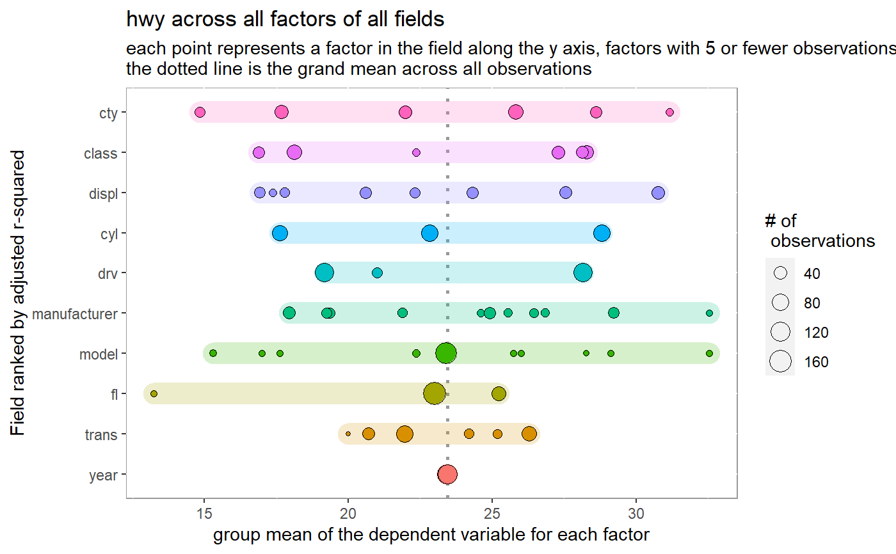

variation_plot.RdVisualize variation among all factor levels for all variables
variation_plot( df, dep_var, n_cat = 10, n_quantile = 10, n_digits = 2, avg_type = c("mean", "median"), ignore_cols = NA_character_ ) variation_plot_interactive(...)
| df | dataframe to evaluate |
|---|---|
| dep_var | dependent variable to use (column name) |
| n_cat | for categorical variables, the max number of unique values
to keep. This field feeds the |
| n_quantile | for numeric/date fields, the number of quantiles used to split the data into a factor. Fields that have less than this amount will not be changed. |
| n_digits | for numeric fields, the number of digits to keep in the breaks
ex: [1.2345 to 2.3456] will be [1.23 to 2.34] if |
| avg_type | mean or median |
| ignore_cols | columns to ignore from analysis. Good candidates are fields that have have no duplicate values (primary keys) or fields with a large proportion of null values |
| ... | Arguments passed on to |
variation_plot_interactive: an utilizing ggplotly
Other visualization functions:
profile_n(),
variation_plot_single_obs()
#>#>